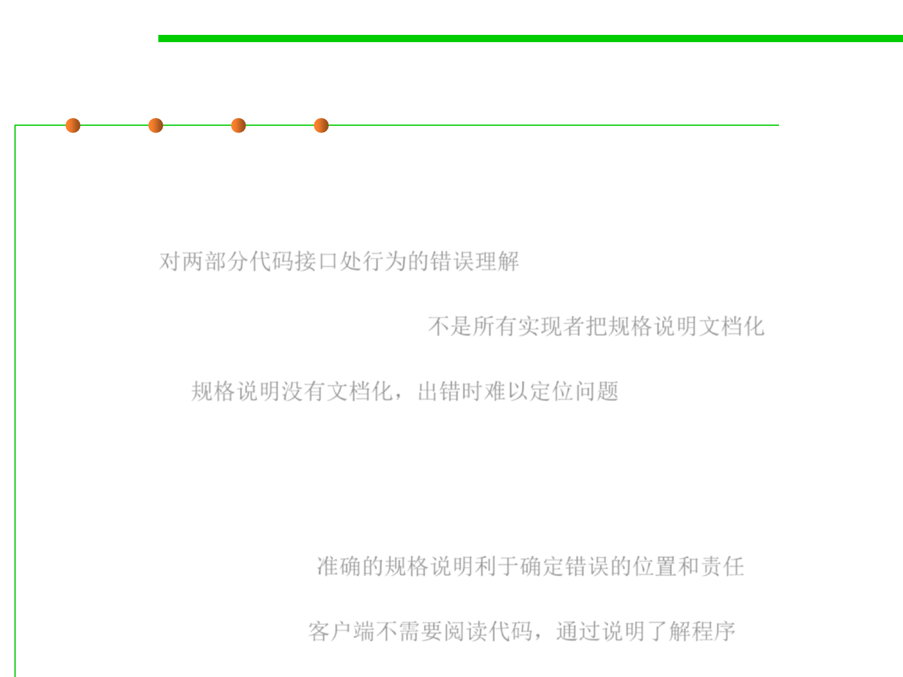

Why specifications?
3.2 Designing Specification
▪ Reality:
– Many of the nastiest(令人讨厌/抓狂的) bugs in programs arise because of
misunderstandings about behavior at the interface between two pieces of
code. 对两部分代码接口处行为的错误理解
– Although every programmer has specifications in mind, not all
programmers write them down. 不是所有实现者把规格说明文档化
– As a result, different programmers on a team have different specifications
in mind. 规格说明没有文档化，出错时难以定位问题
– When the program fails, it’s hard to determine where the error is.
▪ Advantages:
– Precise specifications in the code let you apportion blame (to code
fragments, not people!), and can spare you the agony of puzzling over
where a fix should go.准确的规格说明利于确定错误的位置和责任
– Specifications are good for the client of a method because they spare the
task of reading code. 客户端不需要阅读代码，通过说明了解程序